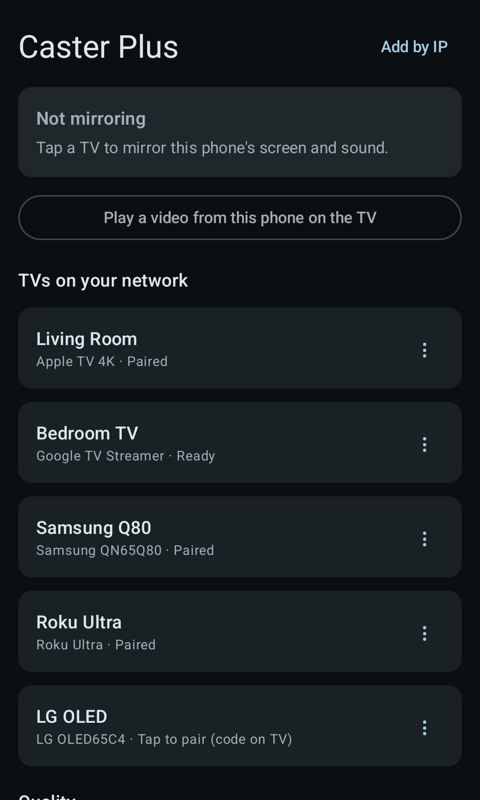
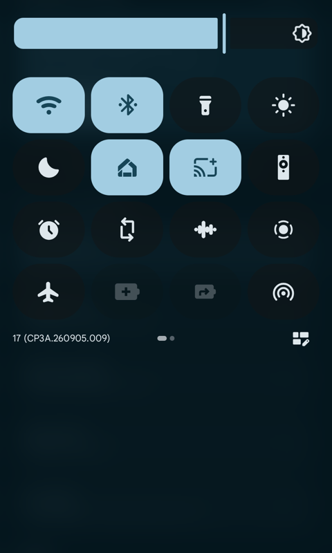
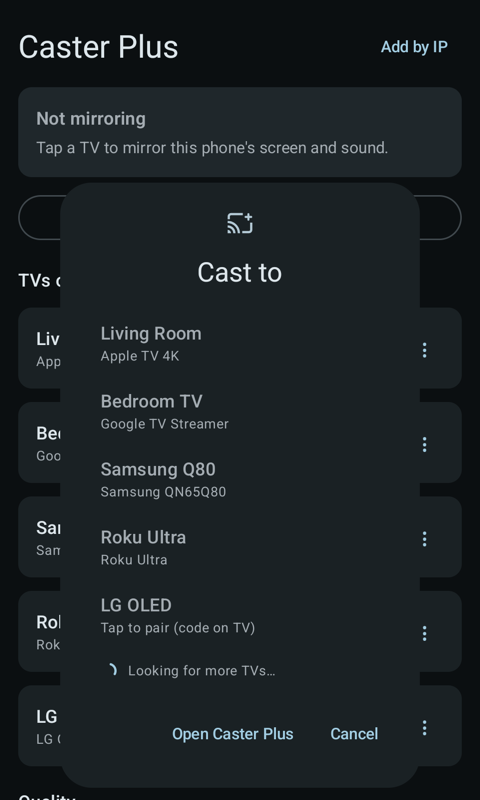
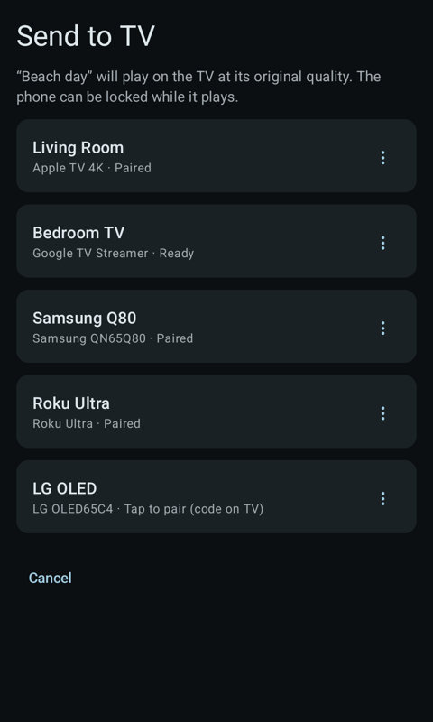
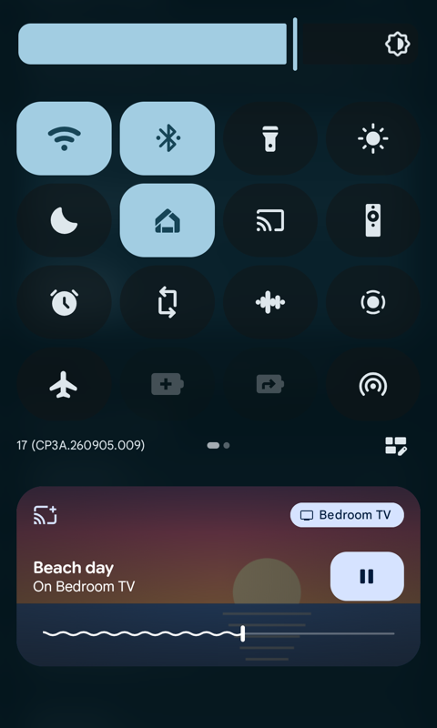
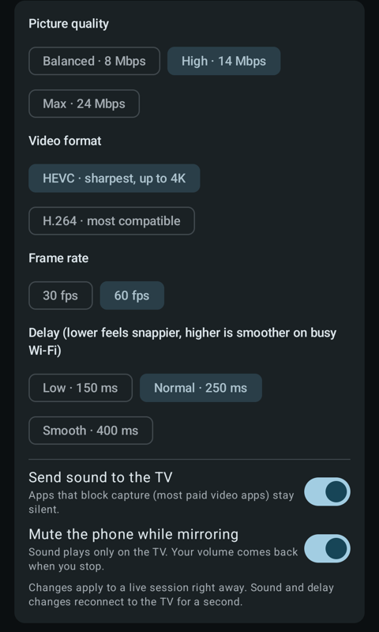

Why we built it
One phone. Every TV in the family.
- An Apple TV at one house
- A Roku at another
- A Google TV at home
We wanted something simple: to put our Android phones on the TVs our families actually have.
Nothing did it well. So we built Caster Plus: one app that finds the TV in the room, mirrors your screen with sound, and plays your videos at full quality, whichever TV it is.
You pay for it once and it’s yours. No ads, no subscription, no account. It just works, so you can get back to what’s on the screen.
The Caster Plus team at Joza Solutions
What it does
Sharp, in sync, and out of your way.
Everything you need to put your phone on the big screen, and nothing you don’t.
-
Your whole screen, or one app
Photos, games, websites and more: mirror your whole screen or a single app, with sound. Turn your phone sideways to fill the TV.
-
Sound on the TV
The sound your apps play comes out of the TV, and your phone can stay quiet while you mirror. The microphone is never used.
-
Send to TV at full quality
Share a video, an audio file or a direct video link. The TV plays the original file, even with your phone locked.
-
One tap from Quick Settings
Add the Caster Plus tile and pick a TV from the Cast to picker, wherever you are.
-
Controls where you expect them
Media controls appear on your lock screen, in the notification shade and in the Quick Settings media panel.
-
Tune it while you watch
Picture quality up to 24 Mbps, HEVC or H.264, 30 or 60 fps, and a delay setting for busy Wi-Fi. Changes apply right away.
Supported TVs
Works with the TVs you already have.
No new hardware. Caster Plus finds the TVs on your Wi-Fi and connects to them directly.
-
Apple TV
Apple’s streaming box
- Screen mirroring
- Yes
- Send to TV
- Yes
The first time, enter the 4-digit code the TV shows. Just once.
-
AirPlay 2 smart TVs
Many Samsung, LG, Vizio and Sony TVs
- Screen mirroring
- Yes
- Send to TV
- Yes
Turn on AirPlay on the TV, then enter its code once.
-
Chromecast and Google TV
Chromecast and TVs with Google TV
- Screen mirroring
- Yes
- Send to TV
- Yes
Verified automatically. No code needed.
-
Roku
Roku players and Roku TVs
- Screen mirroring
- 4K Rokus with AirPlay
- Send to TV
- Yes
Rokus without AirPlay can’t mirror, but they can play videos you send.
- An Android phone with Android 10 or later.
- Your phone and TV on the same Wi-Fi, or add the TV by its IP address.
- Paid streaming apps block screen capture. For those, use the service’s own TV app.
How it works
Three steps to the big screen.
-
Join the same Wi-Fi
Put your phone on the same Wi-Fi as your TV and open Caster Plus. Your TVs appear on their own.
-
Tap your TV
The first time, an Apple TV or AirPlay TV shows a 4-digit code. Enter it once. Chromecast and Google TV are verified automatically.
-
Share your screen
Android asks what to share: your entire screen or a single app. Approve it, and you’re on the TV.
Screenshots
A closer look.
-

Finally, Android on every TV Apple TV, Google TV, Roku and smart TVs. One app. -
Your screen on the TV, with sound Photos, games, websites and more. Sharp and in sync. -

Add to Quick Settings Start casting in one tap, wherever you are -

Pick your TV in one tap Tap the tile and choose where to cast -

Videos at full quality Send a video and the TV plays the original file -

Control it from anywhere Play, pause and scrub without opening the app -

Tuned to your TV Adjust picture, frame rate and delay while you mirror
Swipe or scroll sideways to see all seven.
Pay once. That’s it.
- No ads
- No subscription
- No account
- No in-app purchases
Caster Plus is a paid app on Google Play. You buy it once and get every feature, for every kind of TV it supports.
Changed your mind? Within 2 hours of buying, you can get an automatic refund from Google Play. After that, email us at support@casterplus.com.
Privacy
Private by design.
Nothing is sent to us. The app sends things only to the TV you pick.
-
No account, no tracking
No account, no analytics, no ads and no servers of ours.
-
Encrypted, phone to TV
Mirroring goes straight to your TV, encrypted, after the app checks the TV is the one it claims to be.
-
Microphone never used
“Record audio” captures only the sound your apps are playing, so the TV can play it.
-
Only what you share
The app can’t browse your photos or files. It only sees the one item you share with it.
This website has no cookies or analytics either.
FAQ
Questions, answered.
Does it work with Netflix and other paid streaming apps?
Paid streaming apps block screen capture, so their video stays black when you mirror. Caster Plus doesn’t get around that. Use the service’s own app on your TV instead.
Do my phone and TV need to be on the same Wi-Fi?
Yes. That’s how Caster Plus finds your TV. If a TV doesn’t show up on its own, you can add it by its IP address with Add by IP.
Why does Android ask to share my screen every time?
It’s an Android safeguard, and no app can pre-approve it. Each time, you choose between your entire screen and a single app.
Can I mirror to my Roku?
If it’s a 4K Roku with AirPlay, yes. Send to TV works with Roku too, so you can play your videos on it at full quality.